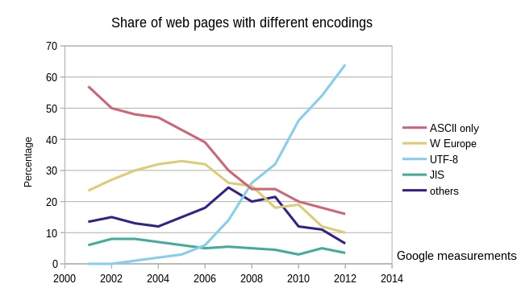

HTML Character Sets
NOTE:=> To display an HTML page correctly, the browser must know what character set (encoding) to use:
Examples:- meta charset="UTF-8"
HTML Character Sets
All modern computer languages use the UTF-8 character set a sdefault.
The encoding for the early web was ASCII. ASCII used 7 bits for the character, and could only represent 128 different characters (English letters).
Windows-1252 was first character set in Windows. It was a copy of ASCII, but used 8-bits to represent 256 different characters (international letters). Windows-1252 is supported by all browsers.

HTML ASCII Reference